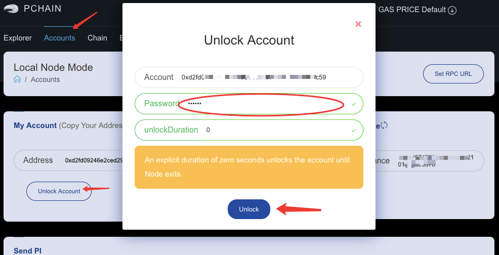
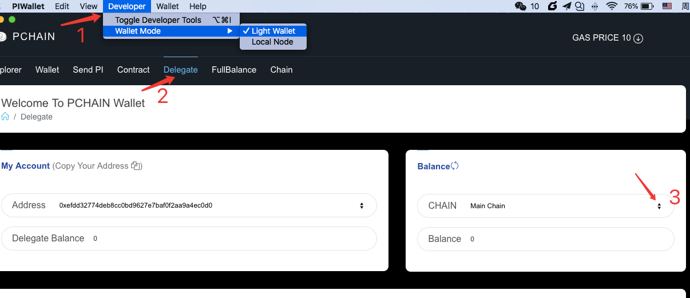
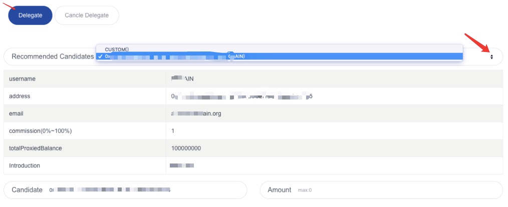

How to apply for a Validator Candidate¶
Note : you can do this only on wallet’s local node mode, please go to this guide to set up the RPC URL.
First, unlock your account. (Please do not keep your account unlock for long time, we recommand set the ‘unlockDuration’ to 300. If you set it to 0, your account will unlock forever unless you lock it manually)
Click ‘Candidate–Apply Candidate’ and fill your deposit amount with at least 10,000 PI and your expected commission(% profit sharing expected from being a Validator). Then click ‘Apply’.


Go to Join Candidate List and submit your introduction. Detailed information increases your chances of convincing Delegators to support your candidacy.

Once your submission has been validated in 2 business days, you will be publicly listed on Recommended Candidates on PIWALLET under Light wallet.
Click ‘Delgate–Recommended Candidates’ and click your address from this list. Your information will show under the below.
If your submission is rejected, PCHAIN team will inform you with email after 2 business days.
How to cancel Candidate¶
You can cancel Candidate via PIwallet (Local node )or call for RPC before starting voting for next Epoch Validator.
Click ‘Developer–Wallet Mode–Local Node–Candidate–Cancel Candidate’.

Confirm the candidate address that you want to cancel and click ‘Cancel’.